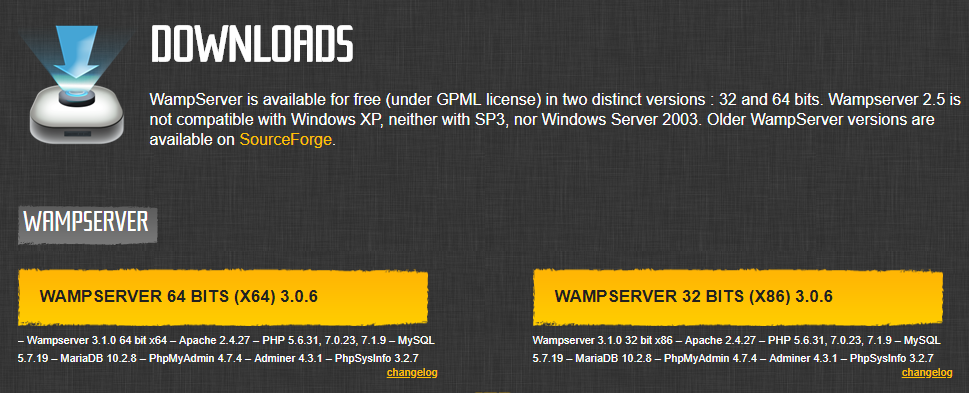
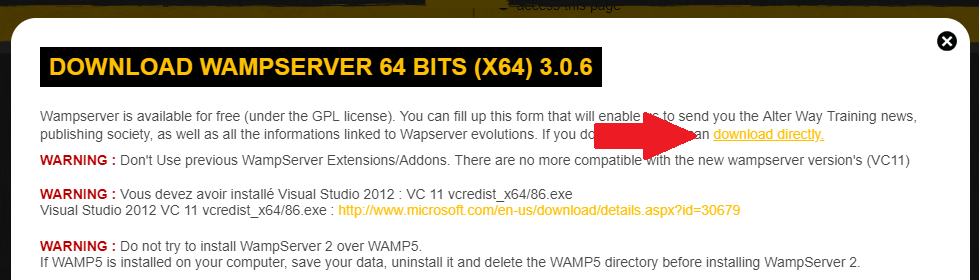

Med en WAMP-server kan man teste nettstedet sitt lokalt, sånn nettstedet ville oppført seg på
en webserver på internett. Denne artikkelen tar for seg installasjonsprosessen av programvaren
som trengs.


Når man har valgt versjon, vises dette skjermbilde. Trykk på "download directly".
Trykk på "Download latest version" så vil nedlastningen starte. Start så installasjonen.
Dette er første steget i installasjonsprosessen. Når du har lest lisensavtalen, trykker du på
"I accept the agreement", og gå så til neste steg ved å trykke på "Next".
Dette steget av installasjonen viser viktig informasjon. Informasjonen omhandler
blandt annet hva man må ha gjort/installert før man kan installere WAMP.
Neste steg er å velge hvor WAMP skal installeres. Velg plassering ved å trykke på
"Browse...", skriv inn plasseringen i input-feltet eller la installeren velge
standard plassering ved å trykke "Next". Installeren advarer også om at
minimum 2 970,9 MB ledig plass kreves.
Nå må du velge en startmenymappe. Velg et navn, la installeren velge standardnavn
eller velg en eksisterende mappe ved å trykke Browse. Trykk så Next for å komme til neste steg.
Her vises en oversikt over mappeplassering og navn på startmenymappen. Trykk "install" for å
starte installeringen. Under installasjonen vil du få spørsmål om hvilken nettleser og hvilken
teksteditor du vil at WAMP skal bruke som standard.
Etter installasjonen vises dette steget. Litt informasjon vises om hvordan WAMP brukes, og
hva som kjennetegner at alle de virituelle serverene kjører.
Installasjonen er ferdig, trykk "Finish" for å lukke installeren.